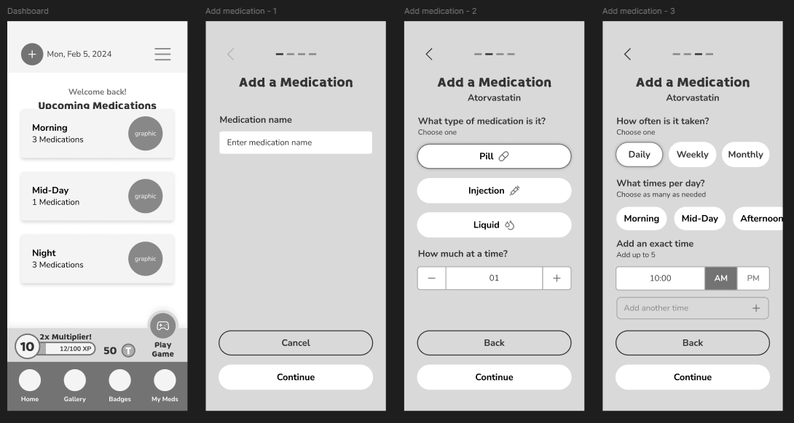

challenges and goals
I haven't built a game myself before, though I play many types of games myself.
challenges
- Displaying information in a simple way for older users
- Making the visuals appealing, but not too sterile or childish
goals
- Keep the design modern, engaging, and easy to follow.
- Have reusable components to cut down on dev time.
research and planning
I needed to understand how the competitors organized their apps to get a baseline of what people are expecting, and possible pitfalls. After the deep dive, I planned out the flow of the app.
Things to keep in mind
- High contrast colors and large buttons for better readability.
- Consistent icons and a clear layout to avoid confusion.
- Plain language to avoid confusion.
wireframes
first iteration
Being the first gamified app I've designed, I was a bit concerned about how it would turn out but I did my best. For the signup, I broke it up in the best way I could to keep things more digestible. Though it isn't ideal, the app signup is all at the beginning. I cannot go into full detail, but I am happy with the overall design of the app. I think on first usage, the portion to add medications was confusing, but it was later adjusted.
second iteration
The second iteration has more information and is laid out better. It is a lot more clear on how to add new medications and what the UI is displaying.
design
Luckily, there weren't really many changes needed when moved into design. I fiddled with color placement a bit then settled on the current color palette. The icons were illustrated/chosen with being inviting without being childish in mind.
handoff and takeaways
This is the first project where the main user base was the elderly, so I had to reframe my thinking. Though it was tough, the large amount of iterations was helpful to creating the best app possible. Keeping things simple with so many options was a bit challenging, but I think I managed. When tested with a test group, it was well recieved and I hope to continue improving the app in the future.